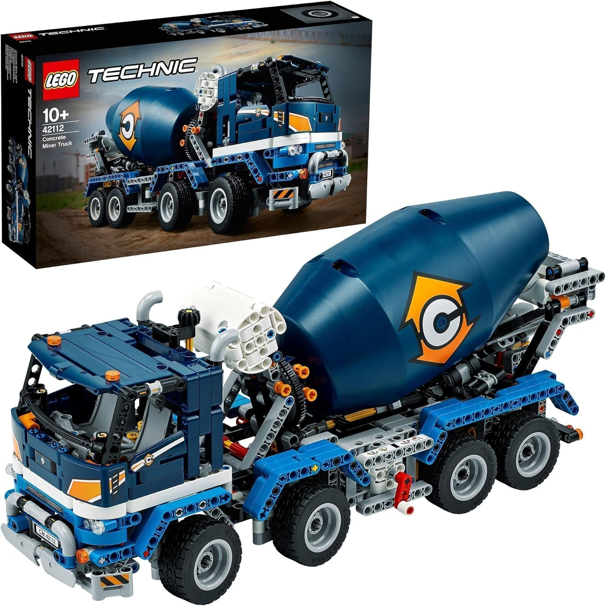
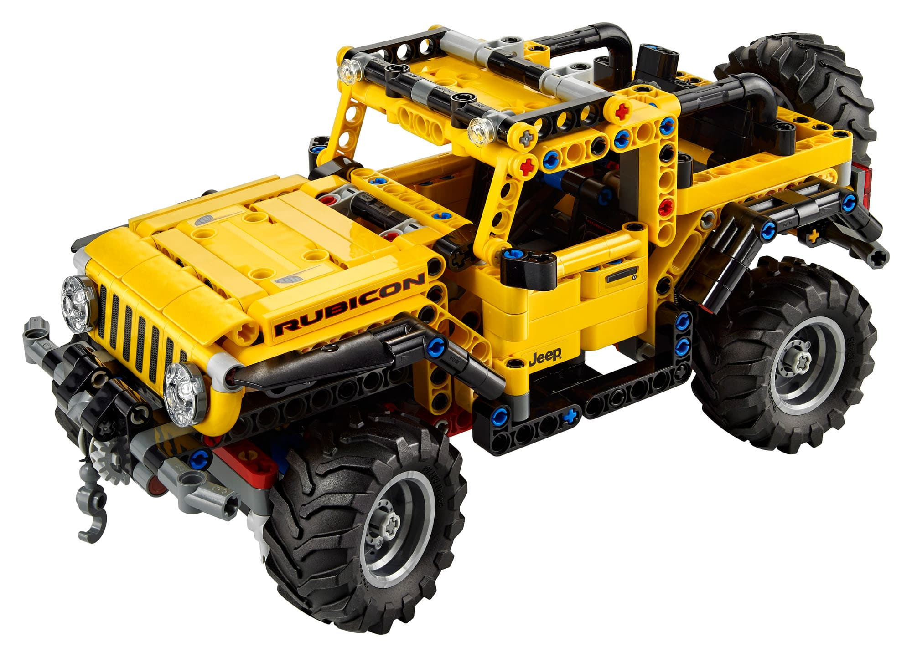

🧱
Mi piace costruire set Lego
✖
L’Ecto‑1 è uno dei veicoli cinematografici più iconici di sempre.
Basata su una Cadillac Miller‑Meteor del 1959, è l’auto ufficiale dei Ghostbusters,
completa di sirene, luci lampeggianti e attrezzature paranormali montate sul tetto.
Nel mondo Lego, l’Ecto‑1 è un set amatissimo perché riproduce fedelmente ogni dettaglio
dell’auto originale: le pinne posteriori, la carrozzeria bianca, il logo dei Ghostbusters
e gli strumenti per catturare i fantasmi.
È un modello che unisce nostalgia, design e divertimento, perfetto per gli appassionati
dei film e dei mattoncini.
✖
La Ford GT è una supercar americana nata per celebrare la storica vittoria di Ford
alla 24 Ore di Le Mans del 1966.
La versione moderna riprende lo spirito originale, combinando un design futuristico
con soluzioni aerodinamiche avanzate.
Il suo motore V6 EcoBoost da oltre 650 cavalli, insieme al telaio in fibra di carbonio
e alle sospensioni attive, la rendono una delle auto più tecnologiche e performanti
della sua categoria.
La Ford GT non è solo una macchina veloce: è un pezzo di storia dell’automobilismo,
un tributo alle corse e all’ingegneria americana.
✖
La Porsche 911 è una leggenda vivente.
Prodotta dal 1964, è diventata un simbolo di eleganza, prestazioni e tradizione.
Il suo design inconfondibile, con i fari tondi e la linea posteriore inclinata,
è rimasto fedele all’originale pur evolvendosi nel tempo.
Il motore boxer posteriore garantisce un equilibrio unico, mentre la precisione di guida
e la qualità costruttiva tedesca la rendono una delle sportive più amate al mondo.
La 911 è un’auto che unisce storia, tecnologia e passione, capace di emozionare
sia in pista che su strada.

Camion Betoniera
✖
Il camion betoniera è un mezzo fondamentale nei cantieri.
Il suo tamburo rotante permette di mantenere il calcestruzzo sempre in movimento,
evitando che si indurisca durante il trasporto.
Nei set Lego, la betoniera è spesso dotata di meccanismi funzionanti che simulano
il vero processo di miscelazione.
È un modello divertente da costruire e ricco di dettagli, perfetto per chi ama
i veicoli da lavoro e il mondo dell’edilizia.

Jeep Rubicon
✖
La Jeep Rubicon è uno dei fuoristrada più capaci al mondo.
Progettata per affrontare terreni estremi, monta assali rinforzati, blocchi dei differenziali,
pneumatici da off‑road e un telaio robustissimo.
È pensata per chi ama l’avventura: rocce, fango, neve, sabbia… la Rubicon passa ovunque.
Nei set Lego, questo modello viene spesso riprodotto con sospensioni funzionanti
e dettagli realistici, rendendolo un veicolo perfetto per gli appassionati
di fuoristrada e costruzioni tecniche.